רעיונות, תופעות ותגליות
כתבות

אמנות ילידית · משפט · שימור תרבותי
החוק שנכתב על קליפת עץ
80 ציורים של בני יולנגו מצפון אוסטרליה סייעו להסביר לבית המשפט את הקשר בין קהילה, ים, חוק וזכויות דיג. מחקר שימור חדש מראה מדוע אי אפשר להפריד בין שימור החומר לבין הסמכות התרבותית של יוצריו.
לקריאת הכתבה ←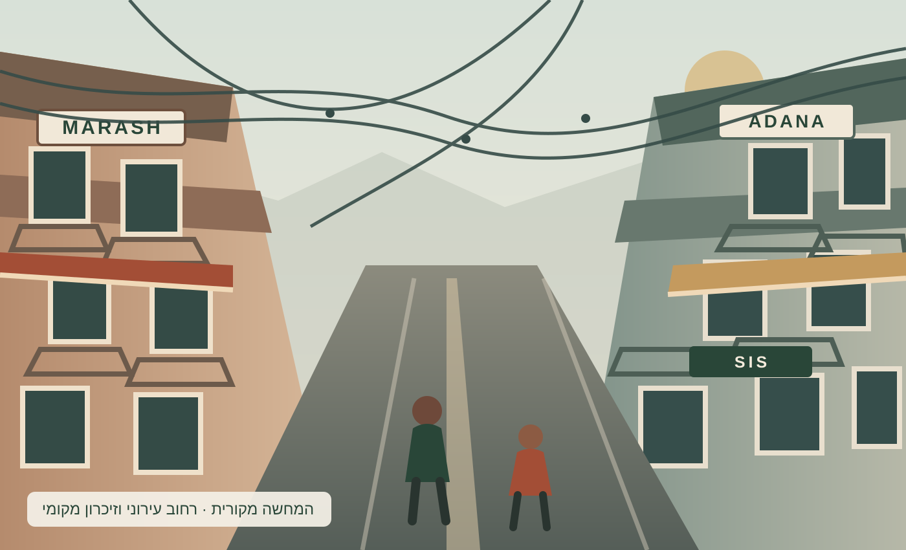
היסטוריה עירונית · הגירה · אנתרופולוגיה פוליטיתהיסטוריה עירונית · הגירה · אנתרופולוגיה פוליטית
הרחובות שזכרו עיר אחרת: בורג' חמוד בין פליטות לאזרחות
איך שכונה שנבנתה בידי פליטים ארמנים נעשתה למרחב עירוני, פוליטי וכלכלי — ומדוע היא מעולם לא הייתה רק רובע ארמני.
לקריאת הכתבה ←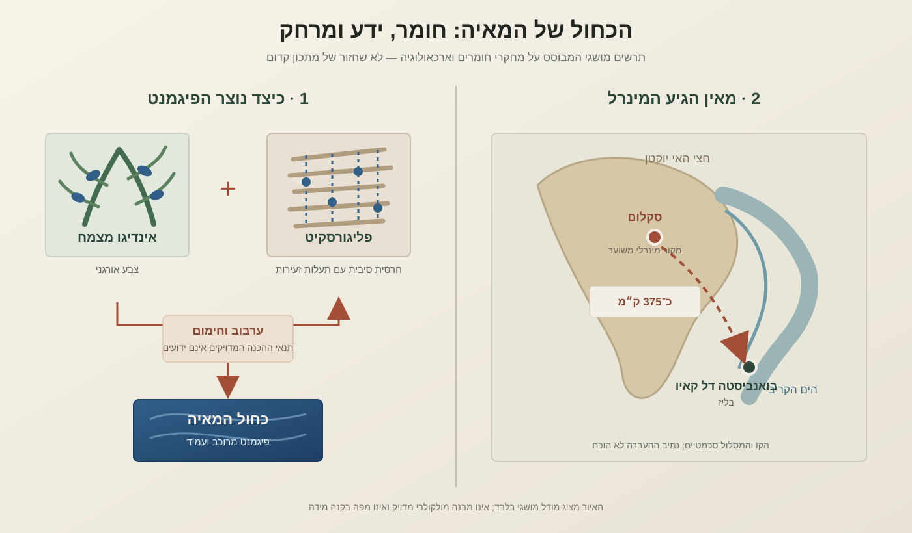
היסטוריה של המדע · כימיה של חומריםהיסטוריה של המדע · כימיה של חומרים · תרבות המאיה
הכחול שהחזיק מאות שנים: הכימיה, הפולחן והמסע של צבע המאיה
פיגמנט המאיה הכחול נוצר משילוב של צבע צמחי ומינרל חרסיתי, ושרד מאות שנים בתנאים קשים.
לקריאת הכתבה ←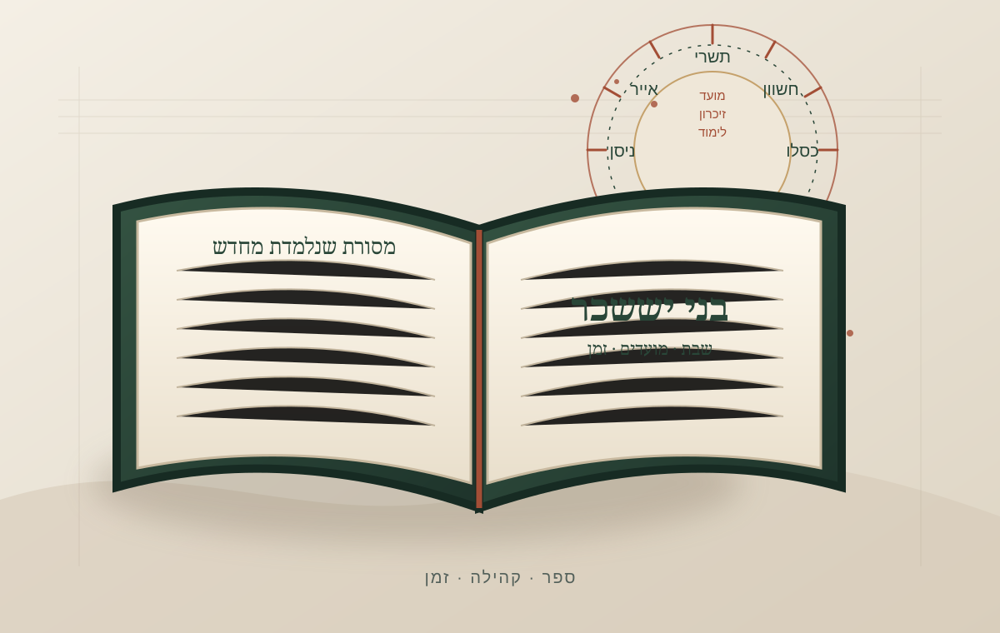
היסטוריה יהודית · סוציולוגיה · רשתות וזיכרוןהיסטוריה יהודית · סוציולוגיה · רשתות וזיכרון
שושלת אינה רק משפחה: מה דינוב מלמדת על זיכרון, רשתות וכוח
רבי צבי אלימלך שפירא נע בין עיירות בגליציה ובהונגריה. סיפורו חושף כיצד חסידות נבנית מספרים, מוסדות צדקה, נישואים, מסילות ברזל ומאבקים על פרנסה — וכיצד חלקים ממנה ממשיכים להתקיים גם אחרי חורבן המרכזים.
לקריאת הכתבה ←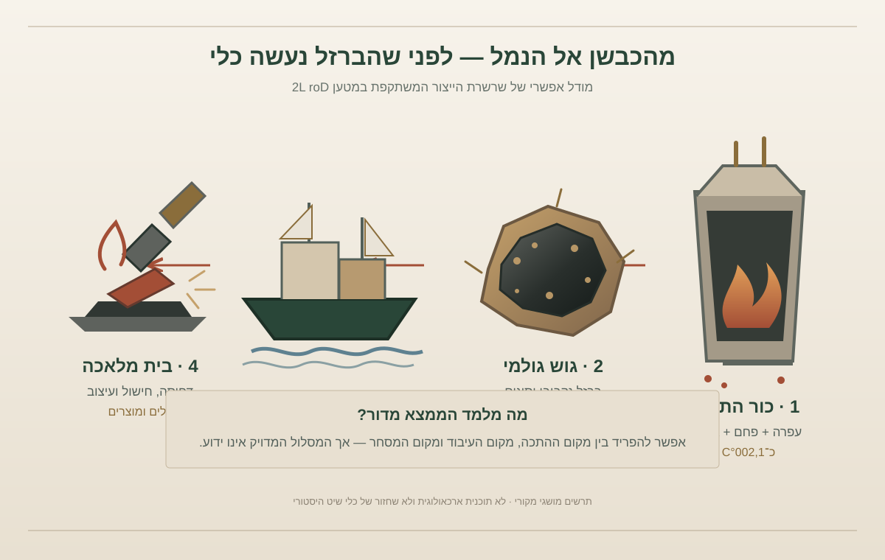
ארכאולוגיה תת־ימית · היסטוריה של הטכנולוגיהארכאולוגיה תת־ימית · היסטוריה של הטכנולוגיה · כלכלה עתיקה
הברזל שלא חישלו: תשעה גושים ששינו את סיפור המסחר בים התיכון
תשעה גושי ברזל גולמי שנמצאו בלגונת דור חושפים כיצד מתכת הועברה בים לפני שעברה את שלבי העיבוד המקובלים.
לקריאת הכתבה ← ביולוגיה · אותות · חברה
ביולוגיה · אותות · חברהביולוגיה אבולוציונית · תורת המשחקים · כלכלה
המסר היקר: מה זנב הטווס מלמד על תעודות, יוקרה ואמון
עקרון ההכבדה והביקורת עליו: מתי מחירו של אות הופך אותו לאמין, ומתי לא.
לקריאת הכתבה ←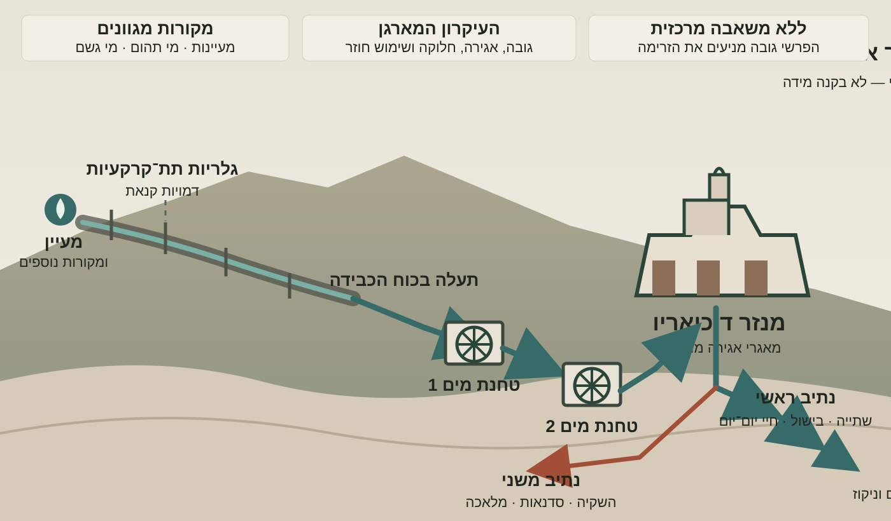
היסטוריה של הטכנולוגיה · הנדסת מיםהיסטוריה של הטכנולוגיה · הנדסת מים · ביזנטיון
המים שלא היו צריכים משאבה: רשת המים של מנזר דוכיאריו
איך מנזר ביזנטי בהר אתוס ארגן מקורות מים, טחנות, מאגרים ונתיבי חלוקה במערכת שפעלה בכוח הכבידה.
לקריאת הכתבה ← ספורט · קרטוגרפיה · מדידה
ספורט · קרטוגרפיה · מדידהספורט פאראלימפי · קרטוגרפיה · פילוסופיה של המדידה
שלוש דרכים למדוד אדם: ברוך פרצמן בין המים, המפה והשם
סיפורו של אלוף פאראלימפי וקרטוגרף פותח שאלה על מדידה, גוף, מרחב והכוח להעניק שמות.
לקריאת הכתבה ←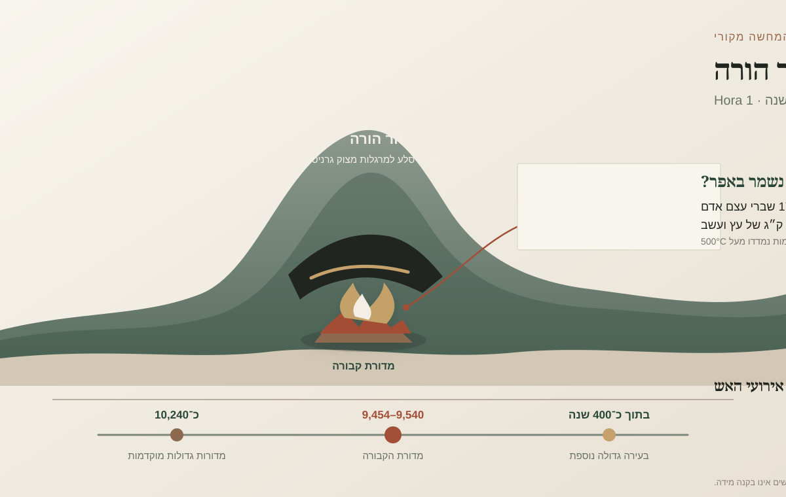
ארכאולוגיה · אנתרופולוגיה · אפריקהארכאולוגיה · אנתרופולוגיה · אפריקה
האש שלא כבתה: טקס המוות בהר הורה לפני 9,500 שנה
מה מלמדים 170 שברי עצם, מדורת קבורה ושימוש חוזר במקלט סלע במלאווי על טקסי מוות קדומים?
לקריאת הכתבה ←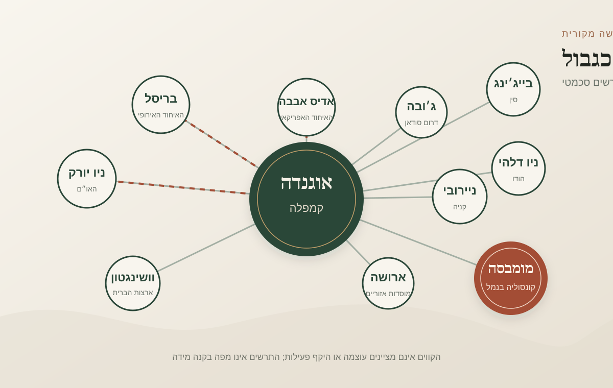
גאוגרפיה פוליטית · יחסים בינלאומייםגאוגרפיה פוליטית · יחסים בינלאומיים · כלכלה
הנציגות שבנמל
מפת הנציגויות של אוגנדה חושפת את הקשר בין דיפלומטיה, נמלים, מסדרונות סחר וריבונות.
לקריאת הכתבה ← ארכאולוגיה · היסטוריה פוליטית
ארכאולוגיה · היסטוריה פוליטיתארכאולוגיה · כתב ומנהל
השבר שהקדים את הארמון
לוחית חרס זעירה מצטרפת לעדויות על כמה מרכזי כוח בממלכת פילוס הקדומה.
לקריאת הכתבה ←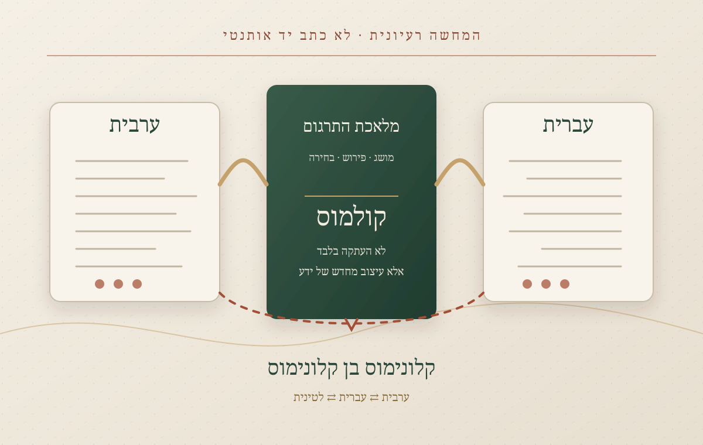
תרגום ידע · ימי הבינייםהיסטוריה אינטלקטואלית · תרגום
האיש שחיבר בין אריסטו לפורים
קלונימוס בן קלונימוס תרגם פילוסופיה ומדע, העביר משל ערבי על בעלי חיים וכתב סאטירה חברתית.
לקריאת הכתבה ←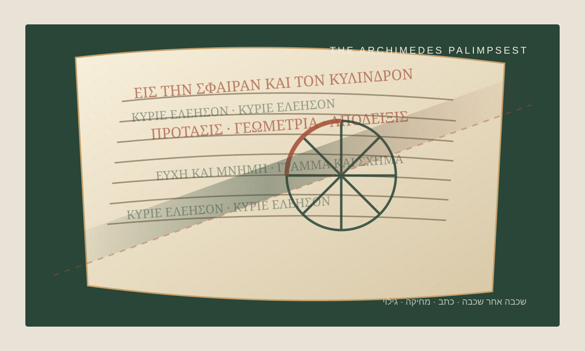
היסטוריה של המדע · כתבי ידמתמטיקה · כתבי יד
הספר שמחק את ארכימדס — והחזיר אותו לחיים
כתב יד תפילה מימי הביניים הסתיר טקסטים של ארכימדס. גילוי דף אבוד פותח מחדש את סיפורו של אוצר מדעי.
לקריאת הכתבה ←סוציולוגיה · ביולוגיה · חינוך
למי שיש — יינתן עוד
איך יתרון קטן עשוי להפוך למנגנון שמגדיל את עצמו, ולמה פערים נוטים להתרחב.
לקריאת הכתבה ← פסיכולוגיה חברתית · אחריות
פסיכולוגיה חברתית · אחריותפסיכולוגיה חברתית · סוציולוגיה
כשהאחריות מתפזרת: הפסיכולוגיה של העומד מן הצד
מדוע קהל עלול לעכב עזרה — ומתי דווקא נוכחותם של אחרים מגדילה את הסיכוי שמישהו יפעל.
לקריאת הכתבה ← תורת המשחקים · שיתוף פעולה
תורת המשחקים · שיתוף פעולהתורת המשחקים · אבולוציה
למה שני אנשים רציונליים בוחרים להפסיד יחד?
איך החלטות רציונליות של יחידים עלולות להוליד תוצאה גרועה לכולם.
לקריאת הכתבה ←היסטוריה · יחסים בינלאומיים
המלחמה שבה פינלנד נולדה מחדש
איך מלחמה בין רוסיה לשוודיה יצרה מסגרת מדינית שממנה צמחה פינלנד המודרנית.
לקריאת הכתבה ←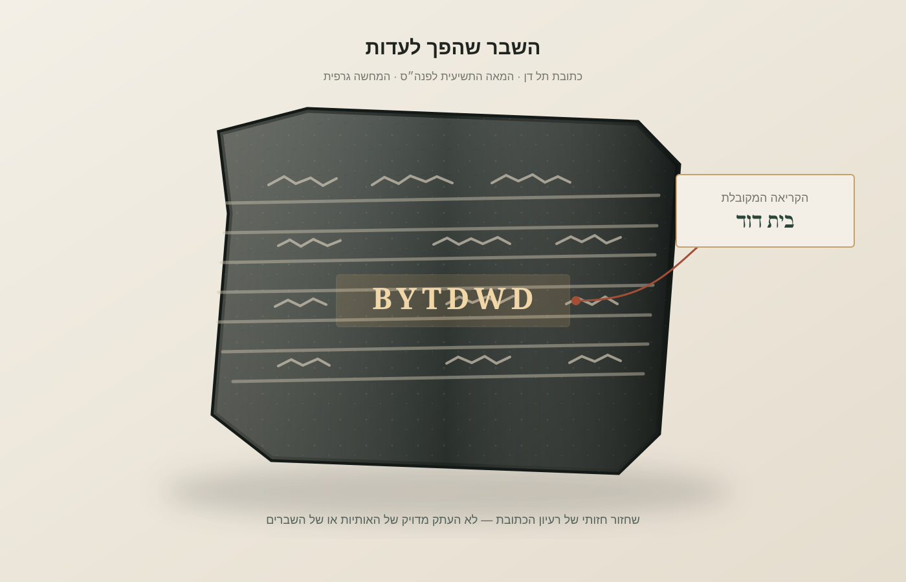
ארכאולוגיה · כתובות עתיקותארכאולוגיה · היסטוריה · מקרא
האבן שאמרה "בית דוד"
מה כתובת ניצחון ארמית שנשברה ושימשה חומר בנייה מספרת על ראשית המלוכה בישראל?
לקריאת הכתבה ←מוזיקה · חינוך · תיאטרון
ללמוד מוזיקה ברגליים
איך אמיל ז'אק־דלקרוז הפך את הגוף לכלי נגינה ולשיטת לימוד.
לקריאת הכתבה ← גאופיזיקה · מבנה כדור הארץ
גאופיזיקה · מבנה כדור הארץמדע · היסטוריה של המדע
הגבול שמתחת לרגלינו
איך רישום של רעידת אדמה חשף את הגבול בין הקרום למעטפת.
לקריאת הכתבה ←מתמטיקה · היסטוריה של המדע
המספרים הראשוניים הגדולים והמרדף אחריהם
איך נוסחה פשוטה הפכה לכלי מרכזי בחיפוש אחר מספרים ראשוניים עצומים?
לקריאת הכתבה ←ספורט · פיזיקה · אמנות
הקרח שבין האמנות למספרים
איך ניקוד, פיזיקה ופוליטיקה נפגשו בגמר האולימפי של 2018.
לקריאת הכתבה ←תרבות · קולנוע וטלוויזיה
מאיה מיטשל: מהחוף האוסטרלי אל מרכז הבמה
סיפורה של שחקנית שמצאה את קולה בין ליסמור ללוס אנג'לס.
לקריאת הכתבה ←המצאות, רעיונות והגנה משפטית
פטנטים
מאחורי מסמך פטנט יבש לכאורה מסתתר לפעמים סיפור אנושי מפתיע: רעיון שנולד מתוך בעיה, ניסיון להגדיר מה בדיוק חדש בו, ולעיתים גם מאבק משפטי על גבולות ההמצאה.
פטנטים · בית ומוצרי צריכה · היסטוריה של הטכנולוגיה
המדיח שלא נועד לבית
ג׳וזפין ג׳. קוקרן תכננה מערכת של שתי משאבות, מכלים נפרדים וסל מסתובב. הפטנט לא היה הראשון בתחום, אבל המכונה שלה מצאה שוק במלונות ובמסעדות — הרבה לפני שהמדיח הפך למכשיר ביתי.
לקריאת הסיפור ←פטנטים · צעצועים מכניים · רובוטיקה
הצעצוע שצעד במדרון
ג׳ורג׳ טי. פאליס תכנן דמות שמתקדמת במורד שיפוע בעזרת רגלי מטוטלת וכפות רגליים קמורות. יותר ממאה שנה אחר כך, חוקרי רובוטיקה הציגו את הפטנט כדוגמה מוקדמת להליכה פסיבית.
לקריאת הסיפור ←פטנטים · תעופה · היסטוריה של הטכנולוגיה
המסוק שהטייס היה אמור להניע בידיים
פול יסו תכנן מסוק לאדם יחיד, שבו הטייס מסובב את הרוטור בידיות ומזיז משקולת איזון באמצעות דוושות. כמעט מאה שנה לפני ההישג של Atlas, הפטנט הזה העלה שאלה הנדסית עצומה: האם אדם יכול להרים את עצמו לאוויר?
לקריאת הסיפור ←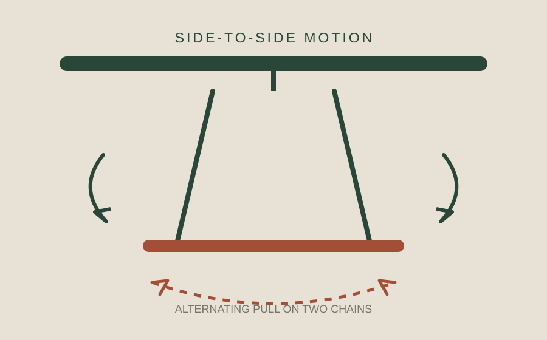
US 6,368,227 B1 · 2002פטנטים · המצאות יומיומיות · משפט וטכנולוגיה
האיש שניסה לרשום פטנט על נדנדה
האם אפשר לרשום פטנט על דרך מסוימת להתנדנד? סטיבן אולסון ביקש להגן על שיטה פשוטה: למשוך לסירוגין בכל אחת משתי השרשראות כדי להניע את הנדנדה מצד לצד. הסיפור נעשה מעניין עוד יותר כשהפטנט הגיע לבחינה מחדש.
לקריאת הסיפור ←חלונות לעולמות אחרים
גילוי האינטרנט
יש ברשת הרבה יותר ממה שמופיע בכותרות ובתוצאות החיפוש הראשונות. אנחנו יוצאים לחפש ספריות דיגיטליות, ארכיונים, מאגרי ידע, פרויקטים קהילתיים ואתרים שמציעים דרך אחרת לראות את העולם.
בריטניה · מורשת · טבע ומחקר
לא רק טירות וגנים: מה באמת מסתתר מאחורי National Trust
מאחורי מדריך הטיולים פועלת מערכת עצומה של שימור, מחקר, אוספים ומימון. סקירה של הארגון הבריטי, הדוחות, מקרי המחקר, ההיסטוריה הקולוניאלית והנגישות הדיגיטלית.
לסקירת האתר ←בינלאומי · היסטוריה · חינוך
העבר האנושי בלי חומת מנוי: המסע אל World History Encyclopedia
אנציקלופדיה רחבת היקף של מאמרים, הגדרות, מפות, אוספים וחומרי הוראה — לצד בדיקה של איכות העריכה, המימון, מדיניות הבינה המלאכותית וזכויות היוצרים.
לסקירת האתר ←בינלאומי · זכויות אדם · סביבה
מי שומר על השומרים? המסע אל Survival International והמאבק על אדמות העמים הילידיים
ארגון ותיק שמחבר בין תיעוד, מחקר וקמפיינים למען זכויות עמים ילידיים — לצד ביקורת על מימון, שימור טבע, אמינות והפער בין עדות לעמדה פוליטית.
לסקירת האתר ←ארצות הברית · מדע · טכנולוגיה ותקשורת
מה קורה כשמדע פוגש מסחר? המסע אל Popular Science
מכוכבים רחוקים ועד מסרק חשמלי, מפודקאסטים ועד מדריכי קנייה: סקירה ביקורתית של מותג המדע הוותיק, מדיניות העריכה ומודל ההכנסות שלו.
לסקירת האתר ←ארצות הברית · מחקרי אוכל · תרבות
מה מסתתר בצלחת? המסע אל Gastronomica, כתב העת שחוקר אוכל כתרבות, כוח והיסטוריה
רבע מאה של מחקר על אוכל כמפגש בין הגירה, היסטוריה, אקולוגיה, כלכלה ופוליטיקה — לצד ביקורת על חומת המנוי והפער בין האתר הציבורי למערכת המו״ל.
לסקירת האתר ←ארצות הברית · עיתונות · תרבות
לא רק רדיו: המסע אל NPR, מערכת החדשות והתרבות של אמריקה
מכתבות תחקיר ועד Tiny Desk ואלפי המלצות ספרים: סקירה ביקורתית של האתר, המודל העיתונאי, המימון והמתחים שמאחורי השידור הציבורי האמריקאי.
לסקירת האתר ←
כלכלה עולמית · חקלאות · זכויות עובדים
מי באמת מרוויח מהקפה שלנו? מסע אל Fairtrade International
מאחורי סמל הסחר ההוגן פועלת מערכת של תקנים, פרמיות, פיקוח ונתונים. סקירה ביקורתית של המנגנון שמנסה לשנות את יחסי הכוח בשרשרת האספקה.
לסקירת האתר ←תחומי עניין
בלי גבולות קשיחים
מדע וטכנולוגיה
מהחלקיק הקטן ביותר ועד מבנה היקום.
היסטוריה וארכאולוגיה
הכוחות, האנשים והמקריות שעיצבו את העולם.
פילוסופיה וחברה
רעיונות שמעצבים את הדרך שבה אנו מבינים את עצמנו.
אמנות ותרבות
צורות חדשות לראות, להרגיש ולפרש את המציאות.
טבע ואדם
מערכות החיים, הסביבה והמפגש ביניהן.
רשת וידע
מאגרי מידע, פרויקטים דיגיטליים וקהילות יוצאות דופן.
על השכל הפועל
לא רק לדעת מה קרה,
אלא להבין איך ולמה.
השכל הפועל הוא מרחב תוכן עצמאי לסקרנות רצינית. אנחנו מחפשים סיפורים במקומות לא צפויים, בוחנים את המקורות, מציבים כל תופעה בהקשר רחב ומנסים לכתוב על נושאים מורכבים בשפה בהירה ונגישה — בלי לוותר על הדיוק.